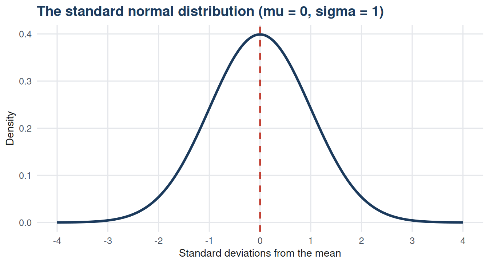
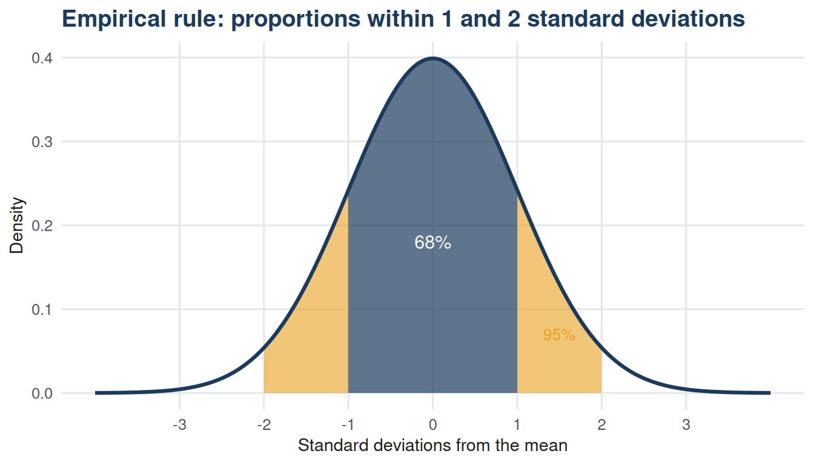
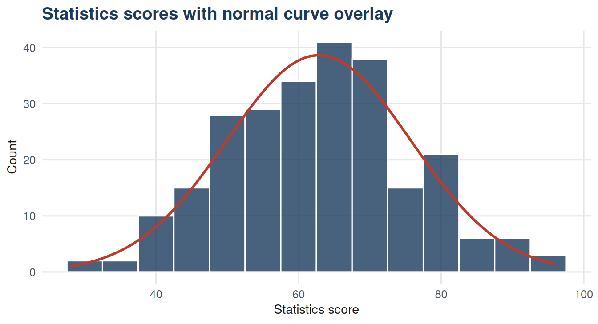

10 Chapter 10: The Normal Curve, Empirical Rule, and Z-Scores
10.1 Learning objectives
By the end of this chapter, the student should be able to:
- Describe the properties of the normal distribution.
- Apply the empirical rule to make probability statements about normally distributed data.
- Calculate z-scores and interpret them as standardised distances from the mean.
- Use z-scores to compare observations from different distributions.
- Assess whether a dataset is approximately normally distributed using a histogram.
10.2 Introduction
Many naturally occurring measurements follow a recognisable pattern: values cluster around a central point and become progressively rarer as they move away in either direction. Heights of adults, errors in manufacturing processes, and standardised test scores all tend to follow this pattern. The mathematical model that captures it is the normal distribution.
The normal distribution is the foundation of a large part of inferential statistics. Confidence intervals, hypothesis tests for means, and regression all rely on it either directly or through the central limit theorem, which is covered in Chapter 17. Understanding the normal curve, its properties, and the z-score transformation that standardises any normal variable is therefore essential preparation for inference.
The dataset for this unit contains examination scores, attendance records, and study hours for 250 students across three management programmes.
10.3 The normal distribution
The normal distribution is a continuous probability distribution defined by two parameters: the mean \(\mu\) and the standard deviation \(\sigma\). Its probability density function is:
\[f(x) = \frac{1}{\sigma\sqrt{2\pi}} \exp\!\left(-\frac{(x-\mu)^2}{2\sigma^2}\right)\]
This formula need not be memorised. What matters are its implications for the shape of the curve.
The normal curve is symmetric about its mean. The mean, median, and mode are all equal. The curve is bell-shaped, with a single peak at the mean, and its tails extend indefinitely in both directions but approach the horizontal axis asymptotically, never touching it.
10.4 The empirical rule
For any normally distributed variable, approximately fixed proportions of observations fall within whole-number multiples of the standard deviation from the mean. These proportions are summarised in the empirical rule (also called the 68-95-99.7 rule).
| Range | Approximate percentage | Practical implication |
|---|---|---|
| Within 1 SD of the mean (mu +/- sigma) | 68% | About two-thirds of observations fall within one standard deviation either side. |
| Within 2 SD of the mean (mu +/- 2*sigma) | 95% | About 19 in 20 observations fall within two standard deviations. |
| Within 3 SD of the mean (mu +/- 3*sigma) | 99.7% | Almost all observations fall within three standard deviations. |

10.4.1 Applying the empirical rule
The statistics examination scores in this dataset have a mean of approximately 60 and a standard deviation of approximately 12. If the scores are approximately normally distributed, the empirical rule predicts that about 68% of students scored between 48 and 72, and about 95% scored between 36 and 84.
Code
mu_score <- mean(df$statistics_score)
sd_score <- sd(df$statistics_score)
emp_bounds <- data.frame(
Rule = c("1 SD", "2 SD", "3 SD"),
Lower = round(c(mu_score - sd_score,
mu_score - 2*sd_score,
mu_score - 3*sd_score), 1),
Upper = round(c(mu_score + sd_score,
mu_score + 2*sd_score,
mu_score + 3*sd_score), 1),
Expected_pct = c("~68%", "~95%", "~99.7%"),
Actual_pct = round(100 * c(
mean(df$statistics_score >= mu_score - sd_score &
df$statistics_score <= mu_score + sd_score),
mean(df$statistics_score >= mu_score - 2*sd_score &
df$statistics_score <= mu_score + 2*sd_score),
mean(df$statistics_score >= mu_score - 3*sd_score &
df$statistics_score <= mu_score + 3*sd_score)
), 1)
)
knitr::kable(emp_bounds,
col.names = c("Rule", "Lower bound", "Upper bound",
"Expected %", "Actual %"),
caption = "Table 10.2: Empirical rule applied to statistics scores") |>
kableExtra::kable_styling(bootstrap_options = c("striped", "hover"),
full_width = FALSE)| Rule | Lower bound | Upper bound | Expected % | Actual % |
|---|---|---|---|---|
| 1 SD | 49.9 | 75.7 | ~68% | 67.2 |
| 2 SD | 37.0 | 88.6 | ~95% | 96.0 |
| 3 SD | 24.1 | 101.5 | ~99.7% | 100.0 |
If the actual percentages are close to the expected values, this is evidence that the scores are approximately normally distributed.
10.5 Z-scores
A z-score converts a raw observation into a standardised distance from the mean, expressed in units of the standard deviation:
\[z = \frac{x - \mu}{\sigma}\]
A z-score of 1.5 means the observation lies 1.5 standard deviations above the mean. A z-score of -0.8 means the observation lies 0.8 standard deviations below the mean.
Z-scores have two practical uses. First, they allow comparison of observations from distributions with different means and standard deviations. Second, for a standard normal distribution, z-scores correspond to known probabilities that can be read from tables or computed directly.
Code
df_z <- df |>
mutate(
z_stats = round((statistics_score - mean(statistics_score)) /
sd(statistics_score), 2),
z_maths = round((maths_score - mean(maths_score)) /
sd(maths_score), 2)
) |>
select(student_id, programme, statistics_score, z_stats,
maths_score, z_maths) |>
arrange(desc(z_stats)) |>
head(10)
knitr::kable(df_z,
col.names = c("Student", "Programme", "Stats score", "Stats z",
"Maths score", "Maths z"),
caption = "Table 10.3: Top 10 students by statistics z-score") |>
kableExtra::kable_styling(bootstrap_options = c("striped", "hover"),
full_width = FALSE)| Student | Programme | Stats score | Stats z | Maths score | Maths z |
|---|---|---|---|---|---|
| STU00018 | Business | 96 | 2.57 | 61 | 0.16 |
| STU00149 | Finance | 96 | 2.57 | 63 | 0.29 |
| STU00189 | Marketing | 93 | 2.34 | 45 | -0.94 |
| STU00064 | Business | 91 | 2.18 | 49 | -0.67 |
| STU00159 | HRM | 91 | 2.18 | 64 | 0.36 |
| STU00140 | Operations | 90 | 2.10 | 51 | -0.53 |
| STU00047 | Marketing | 88 | 1.95 | 71 | 0.84 |
| STU00076 | Operations | 88 | 1.95 | 49 | -0.67 |
| STU00081 | Marketing | 88 | 1.95 | 39 | -1.35 |
| STU00246 | Marketing | 86 | 1.79 | 68 | 0.64 |
A student who scores 72 in statistics (mean 60, SD 12) has a z-score of 1.0. A student who scores 78 in mathematics (mean 65, SD 9) has a z-score of 1.44. Despite the lower absolute score, the statistics student’s performance is relatively less exceptional within their distribution.
10.6 Assessing normality
The empirical rule and z-scores are most meaningful when the data are approximately normal. A histogram provides a visual check.

Close agreement between the histogram and the overlaid normal curve supports treating the data as approximately normal. Large departures, particularly in the tails, suggest the normal approximation may not be appropriate.
10.7 Summary
The normal distribution is symmetric and bell-shaped, defined by its mean and standard deviation. The empirical rule states that approximately 68%, 95%, and 99.7% of observations in a normal distribution fall within one, two, and three standard deviations of the mean respectively.
A z-score converts a raw value to a standardised scale, enabling comparison across distributions with different means and standard deviations. Z-scores also correspond to probabilities under the standard normal distribution, making them central to many inferential procedures covered in later chapters.
10.8 Key terms
| Term | Definition |
|---|---|
| Normal distribution | A continuous, symmetric, bell-shaped probability distribution defined by its mean and standard deviation. |
| Standard normal distribution | A normal distribution with mean 0 and standard deviation 1. |
| Empirical rule | The rule stating that 68%, 95%, and 99.7% of values in a normal distribution lie within 1, 2, and 3 standard deviations of the mean. |
| Z-score | A standardised score expressing how many standard deviations an observation lies from the mean. |
| Standardisation | The process of converting raw values to z-scores by subtracting the mean and dividing by the standard deviation. |
10.9 Exercises
A normal distribution has mean 50 and standard deviation 8. Using the empirical rule, between what two values would you expect approximately 95% of observations to fall? What proportion of observations would you expect to exceed 66?
A student scored 74 in statistics (mean 60, SD 12) and 81 in finance (mean 70, SD 7). In which subject did the student perform better relative to the class? Use z-scores to support your answer.
Using Table 10.2, do the actual percentages match the empirical rule predictions for this dataset? What does a close match indicate, and what would a large discrepancy suggest?
A quality control process produces components with a mean diameter of 10.00 mm and a standard deviation of 0.05 mm. If the acceptable range is 9.90 to 10.10 mm and the diameters are normally distributed, what percentage of components would you expect to fall outside the acceptable range?
A manager claims: “Since our data follows a normal distribution, extreme values are impossible.” Is this claim correct? What does the normal distribution actually say about extreme values?